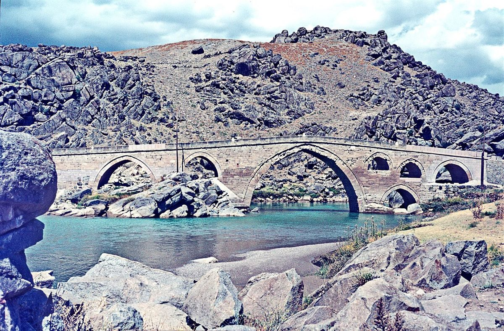
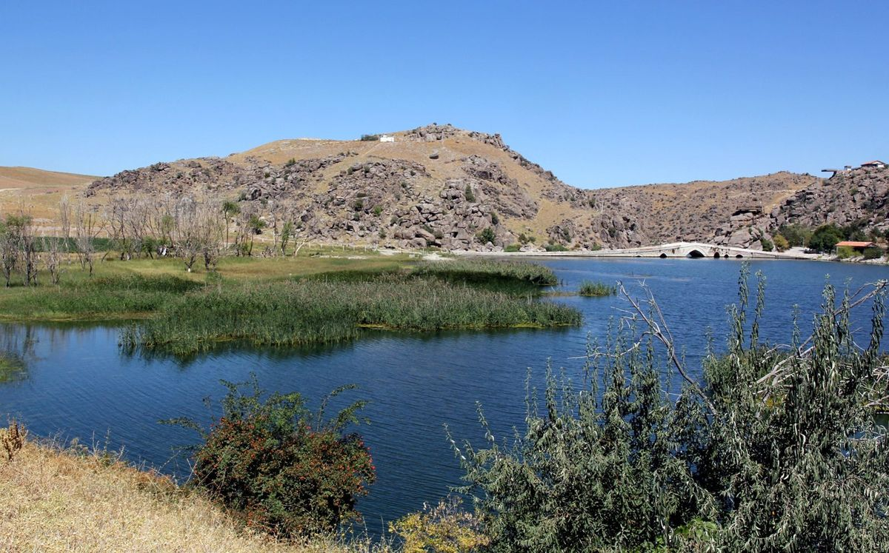
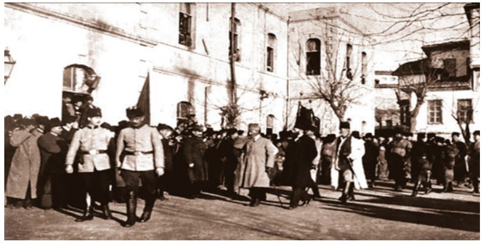
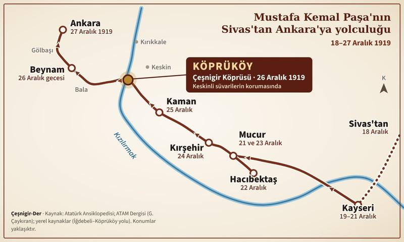

Tarihimiz
Kızılırmak'ın en dar yerinde, yedi yüzyılı aşkın bir köprü ve onun bekçilerinin kurduğu köy.
Bölüm 1 · Köprü
Kızılırmak'ın en dar yerinde bir köprü
Ankara ile Kırşehir arasındaki eski yol, Kızılırmak'ı kayaların ırmağı daralttığı noktada geçerdi. Yüzyıllardır orada duran taş köprü, köyümüze de adını verdi: Çeşnigir Köprüsü.


Köprü kesme taştandır; üzerinde ne kitabe ne süsleme vardır. Ayakları sağlam kayaya otursun diye kayaların çizgisini izleyerek hafifçe eğri kurulmuştur. Irmak ortadaki büyük sivri kemerin altından akar; yandaki küçük gözlerden ancak taşkında su geçer.
Köprünün ölçüleri
- Uzunluk113,25 m (Çulpan ve Özkan 110 m verir)
- GenişlikKorkuluklar hariç 5,80 m
- Ana kemer18,60 m açıklık, 13,65 m yükseklik
- Kemer açıklıklarıAnkara yönünden: 3,75 · 4,00 · 4,13 · 6,28 · 18,60 · 5,90 m
- Boşaltma gözleriAna kemerin doğusunda bir, batısında beş
- Gizli gözlerGövde içinde üç sivri kemerli hafifletme gözü
- MalzemeKesme taş
"Çeşnigir" ne demek?
Farsça çaşni (tat) ve gir (alan) sözlerinden gelir. Selçuklu ve Osmanlı saraylarında padişahın yemeklerini önceden tadan, güvenliğinden sorumlu görevliye çaşnigir denirdi. Sarayın en itibarlı görevlerinden biriydi.
Köprünün bu adı neden aldığı bilinmiyor. Belgelerde hem "Çaşnigir" hem "Çeşnigir" yazılışı geçer.
Köprüyü kim yaptırdı?
Kitabesi olmadığı için kesin tarihi bilinmiyor. En yaygın görüşe göre köprü 13. yüzyılda, Anadolu Selçukluları döneminde, yanındaki bir hanla birlikte yapıldı. Sanat tarihçisi Fügen İlter'e göre daha eski bir köprünün temelleri üzerine kuruldu ve Osmanlı döneminde yenilenince ilk biçimini yitirdi.
Başka bir görüşe göre köprü bugünkü hâliyle Osmanlı yapısıdır. 1936'da köprüyü inceleyen Avusturyalı K. Ritter böyle düşünür; tarihçi Prof. Dr. Hamit Pehlivanlı'nın arşivde bulduğu bir belge de bu görüşü destekler:
"Sultan Murad Han'ın yaptırdığı Çaşnigir Köprüsü"
Osmanlı arşiv belgesi, 27 Temmuz 1852
Pehlivanlı, o yıllarda köprünün üzerinde bugün kayıp bir kitabe bulunmuş olabileceğini düşünür.
Kaynak: Pehlivanlı, Yedi Kıta 2012 · KÜRE Ansiklopedi, Çeşnigir KöprüsüBiliyor muydunuz?
- Köyümüzün eski adları: 1777'de devlet kayıtlarında "Çaşnigir Köprüsü karyesi", 1815'te "Çaşnigir Derbendi". Halk arasında bugün de kısaca "Köprü" denir.
- Rivayete göre 1402'de Timur'un ordusu Ankara Savaşı'na giderken köprümüzden geçti.
- 1609'da Sultan I. Ahmed iki ayrı emirle köprü çevresindeki eşkıyanın temizlenmesini istedi.
- 1724'te Sultan III. Ahmed'in bir emri, Ankara sancağının sınırını "Çaşnigir" diye anar ve yolların eşkıyaya karşı korunmasını ister.
- Rivayete göre 16. yüzyılda Yavuz Sultan Selim'in Mısır Seferi hazırlıkları sırasında köprü elden geçirildi; onarımın Mimar Sinan'a ait olduğu söylenir.
- Köprüyü koruyan derbendcilerin ağası Deli Battal, halka zulmettiği için 1822'de Sultan II. Mahmud'un emriyle cezalandırıldı.
- 1892'de köprünün başında taştan bir aslan heykeli vardı.
- 1852'deki onarım, açık eksiltmeyle en uygun fiyatı veren ustaya yaptırıldı.
Bölüm 2 · Köprüden önce
Köprüden önce: 5.000 yıllık bir geçit
Köprümüz eski, ama geçit ondan da eski. Irmağın karşı kıyısındaki kayalık tepede insanlar beş bin yıldır yaşıyor.

Köprünün karşı kıyısındaki Büklükale, ırmağın en dar yerinde kurulmuş eski bir şehirdir. Kazı ekibine göre burada MÖ 3000 civarından Osmanlı dönemine kadar aralıksız yaşanmış; bu dar geçit her çağda önemli bir geçiş noktası olmuştur. Ekip, yakında bir Roma köprüsünün kalıntılarını da kaydetmiştir.
Kazılar 2009'dan beri Japon arkeolog Kimiyoshi Matsumura başkanlığında sürüyor. Hitit'ten Büyük İskender dönemine kadar pek çok çağın izleri çıktı. Bulunan Hitit tabletleri, bugüne kadar bulunanların en batıdakileri arasında.
Kaynak: Kırşehir Ahi Evran Üniversitesi, Büklükale kazısı · Hürriyet Daily News, 30 Haziran 2023 · Hürriyet Daily News, Büklükale'de İskender dönemi izleri · Daily Sabah, 19 Haziran 2023Kroisos bu geçitten mi geçti?
Herodot, Lidya Kralı Kroisos'un MÖ 6. yüzyılda Kızılırmak'ı köprülerden geçtiğini yazar ama yer adı vermez. Tarihçi Olcay Zengin Koşan, bu geçişin bugünkü köprünün yerindeki daha eski bir köprüden olabileceğini öne sürer. Garstang ve Gurney de köprünün altında daha eski köprülerden kalma taşlar gördüklerini yazar. Yine de bu bir ihtimal; kesinleştiren bir belge yok.
Kaynak: O. Zengin Koşan, "Antik Çağ'da Kızılırmak", 2021 · J. Garstang ve O. R. Gurney, The Geography of the Hittite Empire, 1959Bölüm 3 · Köyümüz
Köprüden doğan köy
Köprüköy, bir güvenlik noktası olarak doğdu. Köprüyü koruyan bekçilerin aileleri burada kaldı, çoğaldı ve bir köy kurdu.

Jandarmanın olmadığı dönemlerde Osmanlı devleti, eşkıyanın sık görüldüğü geçitleri çevre köylerin halkına korutur, karşılığında onları bazı vergilerden muaf tutardı. Bu düzene derbend, başındaki kişiye derbend ağası denirdi. Bekçiler yolcuların can ve malından sorumluydu; bir zarar olursa onu öderlerdi.
Çeşnigir Köprüsü'nün çevresine 50 kadar derbendci yerleştirildi. Kayıtlarda köyün adı 1777'de "Çaşnigir Köprüsü karyesi", 1815'te "Çaşnigir Derbendi" olarak geçer. 1840'larda köyde 182 Müslüman ve 7 Rum hanesi, bir han ve bir cami vardı.
Halka zulmeden derbend ağası Deli Battal, 1822'de Sultan II. Mahmud'un emriyle yakalanıp cezalandırıldı.
Osmanlı arşiv belgeleri
Zamanla düzen bozuldu; arşivlerde halktan fazla para isteyen ağalara dair şikâyetler geçer. 1831'de derbendin muafiyeti kaldırıldı, yol güvenliği önce zaptiyeye, sonra jandarmaya geçti. O günlerden geriye bugün yalnızca köprü kaldı.
Kaynak: Pehlivanlı, Yedi Kıta 2012 · BOA, Cevdet Adliye 38/2270Bugün Köprüköy
- KonumKırıkkale, Keskin; Kapulukaya Baraj Gölü'nün doğu kıyısı
- UzaklıkKeskin 25 km, Kırıkkale 37 km, Ankara yaklaşık 113 km
- Rakım803 m
- Nüfus662 (2025, TÜİK)
- GeçimTarım (buğday, arpa, nohut, patates), hayvancılık ve balıkçılık
Bölüm 4 · Atatürk
Atatürk köyümüzden geçti
26 Aralık 1919, Cuma. Mustafa Kemal Paşa ve Heyet-i Temsiliye, Ankara'ya giden yolun son günlerinde köyümüzden geçti.

Heyet 18 Aralık'ta Sivas'tan yola çıktı ve Kayseri, Hacıbektaş ve Kırşehir üzerinden 25 Aralık'ta Kaman'a ulaştı. Orada Paşa'yı Ali Çavuş ağırladı. Yeğeni Mehmet Bektaş'ın anlattığına göre Paşa yolda nerede kalabileceğini sorunca Ali Çavuş şöyle dedi:
"Köprü köyünde Hacı Ali Ağa'nın odasında kalırsınız."
Kaman'da Ali Çavuş, Aralık 1919
Ertesi gün heyet, Keskinli süvarilerin korumasında İğdebeli–Köprüköy yolundan Kızılırmak'ı geçerek Bala'ya ulaştı. Irmağın büyük ihtimalle Çeşnigir Köprüsü'nden geçildiği düşünülür, ancak kaynaklar köprünün adını anmaz. Geceyi Beynam köyünde geçiren heyet, 27 Aralık 1919'da Ankara'ya girdi.


Yolculuk gün gün
- 18 AralıkSivas'tan hareket
- 19–21 AralıkKayseri
- 21 AralıkMucur
- 22 AralıkHacıbektaş
- 23 AralıkYeniden Mucur
- 24 AralıkKırşehir
- 25 AralıkKaman
- 26 AralıkKöprüköy, Bala; gece Beynam köyü
- 27 AralıkAnkara
Bölüm 5 · Rivayetler
Köprünün rivayetleri
Her eski köprü gibi bizimkinin de dilden dile anlatılan hikâyeleri var. Bunlar belgeye değil, kuşaktan kuşağa aktarılan anlatılara dayanır.
Kan Taşı
Karakeçili'den derlenen bir rivayete göre köprü sekiz kez yapılmış, sekizinde de yıkılmış. Ustabaşı rüyasında, çocuklarının kanına bulanmış iki taş konursa köprünün ayakta kalacağını görmüş. Bu taşlar büyük kemere konmuş ve bugün "Kan Taşı" diye gösterilir.
Rivayetin sonunda köprüyü yaptıran hükümdar bu olaya gücenir, köprüden geçmez ve ırmağı sığ bir yerden geçer.
Kaynak: B. Özçelik, Kırıkkale Karakeçilileri'nin Halkbilimi Derlemeleri, 1995 · A. Ateş Özkan, Hacettepe Türkiyat Araştırmaları Dergisi 44, 2026Türküde Köprüköy
"Nettin Kızılırmak Allı Gelini" türküsünde anlatılan olayın köyümüzde yaşandığı rivayet edilir. Anlatılana göre karşı köye giden gelin alayı köprüden geçerken köprü yıkılır, gelin ve alaydan pek çok kişi ırmağa kapılır. Ardından Kızılırmak'a sitem eden ağıtlar yakılır.
Kaynak: Timeturk, Türkülere ve hikâyelere konu olan KızılırmakBölüm 6 · Tarihçe
Yıl yıl tarihçe
- MÖ 3000 civarıKöprünün karşısındaki Büklükale tepesinde ilk yerleşim kurulur. Irmağın en dar yeri olan bu geçitte Osmanlı dönemine kadar aralıksız yaşanır.Kaynak: Kırşehir Ahi Evran Üniversitesi, Büklükale kazısı · Daily Sabah, 19 Haziran 2023
- Rivayet: MÖ 6. yüzyılHerodot, Lidya Kralı Kroisos'un Kızılırmak'ı köprülerden geçtiğini yazar ama yer adı vermez. Bazı tarihçiler bu geçişin bugünkü köprünün yerindeki daha eski bir köprüden olabileceğini düşünür; bunu kesinleştiren bir belge yoktur.Kaynak: O. Zengin Koşan, "Antik Çağ'da Kızılırmak", 2021 · J. Garstang ve O. R. Gurney, The Geography of the Hittite Empire, 1959
- 13. yüzyılKöprü, Anadolu Selçukluları döneminde yanındaki bir hanla birlikte yapılır. Fügen İlter'e göre daha eski bir köprünün temelleri üzerine kurulmuştur. Han bugün ayakta değildir.Kaynak: Pehlivanlı, Yedi Kıta 2012 · KÜRE Ansiklopedi, Çeşnigir Köprüsü
- 1402Rivayete göre Timur'un ordusu Ankara Savaşı'na giderken köprüden geçer.Kaynak: KÜRE Ansiklopedi, Çeşnigir Köprüsü
- 16. yüzyılRivayete göre Yavuz Sultan Selim'in Mısır Seferi hazırlıkları sırasında köprüyü Mimar Sinan onarır.Kaynak: KÜRE Ansiklopedi, Çeşnigir Köprüsü · Kırıkkale Turizm ve Tanıtım Portalı
- 1609Sultan I. Ahmed iki ayrı emirle köprü çevresindeki eşkıyanın araştırılmasını ve temizlenmesini ister.Kaynak: BOA, Mühimme Defteri 78/504 ve 78/1234
- Osmanlı dönemiGeçidi korumak için köprünün çevresine 50 kadar derbendci (geçit bekçisi) yerleştirilir. Bekçilerin aileleri zamanla köyümüzün çekirdeğini oluşturur.Kaynak: Pehlivanlı, Yedi Kıta 2012
- 1724Sultan III. Ahmed'in bir emrinde Ankara sancağının sınırı "Çaşnigir" olarak anılır ve yolların eşkıyaya karşı korunması istenir.Kaynak: BOA, Mühimme Defteri 131/1456
- 1777Köyümüz devlet kayıtlarında ilk kez "Çaşnigir Köprüsü karyesi" adıyla geçer. Köy halkı adına Köprülüzâde Osman Ağa, arazi ve bağlara zarar veren, mal gasbeden çevredeki bazı oymakları şikâyet eder.Kaynak: BOA, Cevdet Adliye 38/2270
- 1807Derbend muhafızı Hacı Mehmed ölünce görev, bölgenin nüfuzlu ailesinden Cabbarzâde Süleyman Bey'e verilir.Kaynak: Pehlivanlı, Yedi Kıta 2012 · BOA, Ali Emiri III. Selim 313/18217
- 1815Kayıtlarda köyün adı "Çaşnigir Derbendi" olarak geçer.Kaynak: Pehlivanlı, Yedi Kıta 2012
- 1822Halka zulmeden derbend ağası Deli Battal yakalanır ve padişah emriyle cezalandırılır.Kaynak: Pehlivanlı, Yedi Kıta 2012
- 1818Derbendi korumakla görevli üç köyün halkı, vergiden muaf oldukları hâlde valilerin kendilerinden vergi istediğini İstanbul'a şikâyet eder.Kaynak: Pehlivanlı, Yedi Kıta 2012
- 1831Derbendin vergi muafiyeti kaldırılır; geçidin bekçilik dönemi sona erer.Kaynak: Pehlivanlı, Yedi Kıta 2012
- 1836Köydeki caminin hatibi vefat eder, yerine yenisi atanır. Bu kayıt, köyde o yıllarda bir cami olduğunu gösterir.Kaynak: Pehlivanlı, Yedi Kıta 2012
- 1840–1845Vergi defterlerine göre köyde 182 Müslüman ve 7 Rum hanesi vardır; nüfus 900'ün üzerindedir.Kaynak: Pehlivanlı, Yedi Kıta 2012 · BOA, Nüfus Defteri 3543 ve 1845 Temettuat Defteri
- 1852Harap olan köprü devlet tarafından onarılır. Yazışmalarda köprü "Sultan Murad Han'ın yaptırdığı Çaşnigir Köprüsü" diye anılır.Kaynak: Pehlivanlı, Yedi Kıta 2012
- 1892Fransız gezgin Comte de Cholet, köprünün başında taştan bir aslan heykeli görür. Heykel bugün yerinde değildir.Kaynak: Pehlivanlı, Yedi Kıta 2012 · Cevdet Çulpan, Türk Taş Köprüleri
- 26 Aralık 1919Mustafa Kemal Paşa ve Heyet-i Temsiliye, Sivas'tan Ankara'ya giderken Kaman'dan sonra Keskinli süvarilerin korumasında İğdebeli–Köprüköy yolunu kullanır, Kızılırmak'ı geçip Bala'ya, geceyi geçirdikleri Beynam köyüne varır. Ertesi gün Ankara'ya girerler.
 Mustafa Kemal Paşa ve heyetin karşılanışı, arşiv fotoğrafı
Mustafa Kemal Paşa ve heyetin karşılanışı, arşiv fotoğrafı
Sivas–Ankara yolculuğunun haritası; Köprüköy 26 AralıkKaynak: Vikipedi, Balâ · Atatürk Ansiklopedisi, Mustafa Kemal Paşa'nın Ankara'ya Gelişi · Sırrı Kardeş, Heyet-i Temsiliye ve Mustafa Kemal Kırşehir'de (1950), aktaran Adnan Yılmaz - 1936Avusturyalı araştırmacı K. Ritter, köprünün bugünkü hâliyle Osmanlı yapısı olduğunu yazar.Kaynak: Pehlivanlı, Yedi Kıta 2012
- 29 Şubat 1972Köprüköy'de belediye kurulur, köy belde olur.Kaynak: Vikipedi, Köprüköy (Keskin)
- Baraj yıllarıKapulukaya Barajı'nın gölü köprünün ayaklarına kadar yükselir. Yakına yeni bir karayolu köprüsü yapılır, tarihi köprü araç trafiğine kapanır.Kaynak: Pehlivanlı, Yedi Kıta 2012 · KÜRE Ansiklopedi, Çeşnigir Köprüsü
- 2009Japon arkeolog Kimiyoshi Matsumura başkanlığında Büklükale kazıları başlar; Hitit dönemine ait çivi yazılı tabletler bulunur.Kaynak: Kırşehir Ahi Evran Üniversitesi, Büklükale kazısı · Hürriyet Daily News, 30 Haziran 2023
- 2010Karayolları köprüyü onarır, döşemesi aslına uygun hâle getirilir. Köprü bugün yayalara açıktır.Kaynak: Pehlivanlı, Yedi Kıta 2012 · KÜRE Ansiklopedi, Çeşnigir Köprüsü
- 2013Nüfus 2.000'in altına düşünce belediye kapanır, Köprüköy yeniden köy olur.Kaynak: Vikipedi, Köprüköy (Keskin)
- 2019–2020Kırıkkale Valiliği, seyir terasları, yürüyüş yolları ve tekne turlarıyla Çeşnigir Kanyonu'nu turizme açar.Kaynak: KÜRE Ansiklopedi, Çeşnigir Köprüsü · Türkiye Gazetesi
- Aralık 2025Köprüköy Çeşnigir Kültür Sosyal Yardımlaşma ve Dayanışma Derneği kurulur.Kaynak: Dernek kayıtları
- 6 Eylül 2026Dernek merkezi Köprüköy Çarşı Merkezi'nde törenle açılır.Kaynak: İl Gazetesi

Nüfusun seyri
- 1840'laryaklaşık 945 (vergi defterlerinden tahmin)
- 19853.020
- 19902.914
- 20003.836
- 20101.638
- 20131.023
- 2020604
- 2024720
- 2025662
Kaynak: 1840'lar için BOA nüfus ve temettuat defterleri; 1985–2000 için Vikipedi, Köprüköy (Keskin); 2007 sonrası TÜİK Adrese Dayalı Nüfus Kayıt Sistemi (31 Aralık 2025 sonuçları)
Belde dönemi belediye başkanları
- 1972Hacı Erbek (ilk başkan)
- 1973Mehmet Güven
- 1977M. Dede Köprülü
- 1984Şerafettin Güven
- 1989Şerafettin Güven
- 1994Muzaffer Büken
- 1999Selahattin Güven
- 2004Oğuzhan Köprülü
- 2009Hasan Taşpınar
Kaynak: Vikipedi, Köprüköy (Keskin)
Başlıca kaynak: Prof. Dr. Hamit Pehlivanlı, "Osmanlılarda Yol Emniyetinin Sağlanmasında Derbendlerin Yeri ve Çaşnigir Köprüsü Derbendi" (Yedi Kıta, Aralık 2012; Osmanlı arşiv belgeleri, Cevdet Çulpan ve Fügen İlter'in çalışmalarına dayanır). Diğer kaynaklar her bilginin yanında yazılıdır.